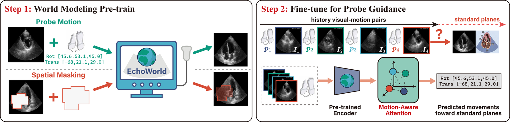
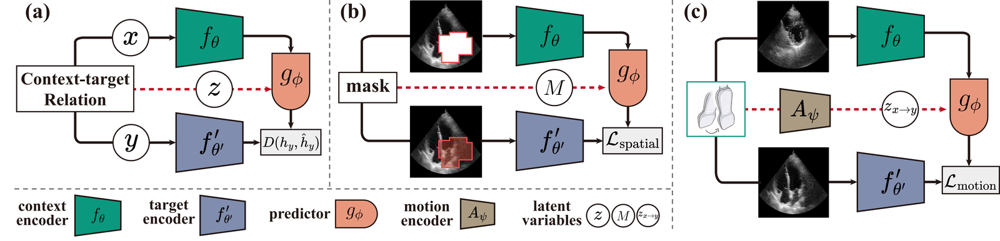
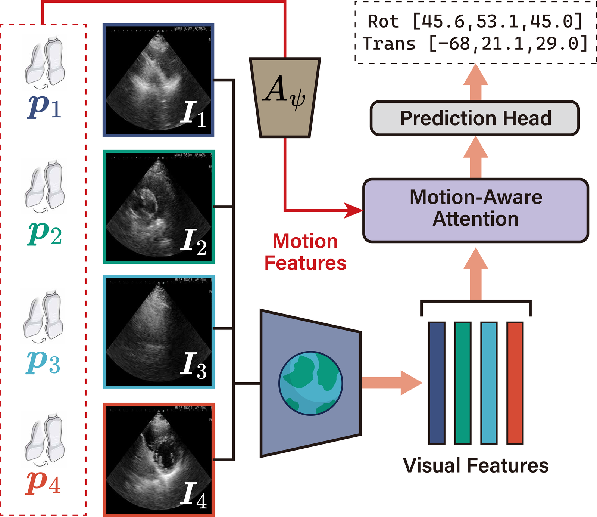
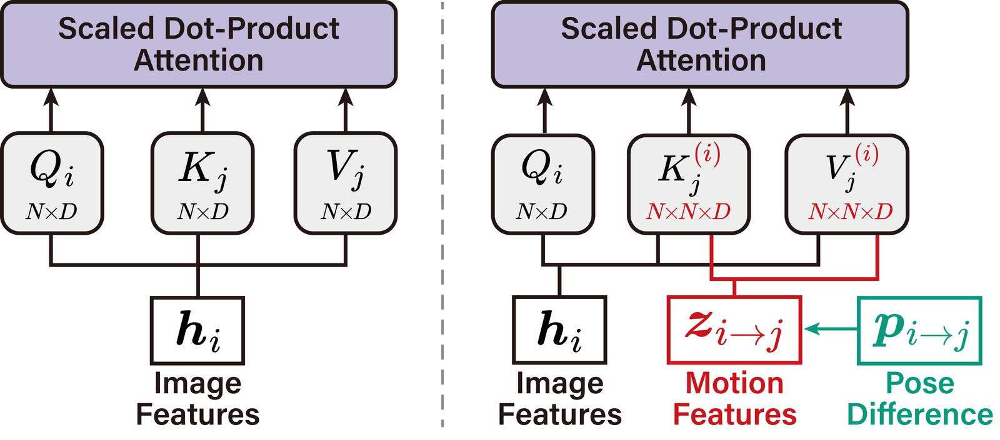

EchoWorld：为超声探头导航学习 motion-aware 的 world model
EchoWorld: Learning Motion-Aware World Models for Echocardiography Probe Guidance
★领域背景速补（给只懂 LLM 的读者）
如果你熟悉 LLM 但没碰过医学超声，这一节先把本文涉及的几个领域名词讲清楚——每个都按「是什么 / 为什么难 / 和这篇什么关系」来讲。你会发现核心思想（world model、attention、表征学习）其实和 LLM 世界完全相通，只是把「文本」换成了「超声图像 + 探头动作」。
echocardiography（超声心动图 / 心脏超声成像）
是什么：医生手持一个 probe（探头）贴在病人胸口，探头发出超声波、接收回声，实时画出心脏某个剖面的灰度图像。它无创、实时、便宜，是看心脏病最常用的检查。类比：有点像用手电筒在黑屋里照——你照的角度决定你看见什么，画面是连续动的视频流。为什么难：它极度依赖操作者手法——同一个病人，老手和新手照出来的画面天差地别。和本文关系：本文要做的「探头导航」就是教 AI 给出「探头该怎么挪」的指令，本质是把老手的手感学出来。
standard plane（标准切面，如 A4C / PLAX）
是什么：要量心脏结构、下诊断，必须把探头摆到若干约定俗成的标准视角，每个视角叫一个 standard plane。例如 A4C（apical four-chamber，心尖四腔切面）能同时看到四个心腔；PLAX（胸骨旁长轴）是另一个常用切面。类比：像拍证件照必须「正脸、平视、露双耳」——角度不对就不合规。为什么难：心脏埋在肋骨和肺之间，能照到标准切面的「窗口」很窄，找对角度要反复试。和本文关系：「找到标准切面」就是本文导航任务的目标——给定当前画面，预测还要怎么动才能到达目标切面。
probe pose / 6-DoF（探头位姿 / 六自由度）
是什么：探头在三维空间里的姿态用 6-DoF（six degrees of freedom，六自由度）描述：3 个平移（前后、左右、上下挪）+ 3 个旋转（绕三个轴转）。类比：就像无人机的「移动 + 翻滚/俯仰/偏航」，一共 6 个能拧的旋钮。和本文关系：本文的动作空间就是这 6 个数——模型输出「该往这 6 个方向各动多少」，正是 LLM 里「输出 token」在这里的对应物，只不过输出的是连续的运动向量。
为什么这个任务本质上很难
三重困难叠加：(1) 心脏在跳动——目标本身是动态的，画面每一帧都在变；(2) 每个人解剖不同——胖瘦、肋骨位置、心脏朝向都不一样，没有统一坐标；(3) 超声图噪声大且不直观——满是斑点噪声、阴影，不像照片那样一眼能看懂。正因如此，培养一名 sonographer（超声技师 / 超声医师）要长期训练，合格人手全球短缺。这也是为什么需要 AI 辅助导航。
「world model」在这里是什么（和 LLM 是一回事）
在 LLM / RL 圈子里，world model（世界模型）指「一个能预测『我做了某动作之后，世界会变成什么样』的模型」。本文的 world model 一模一样，只是模态换了：它学的是「探头一动，超声画面会怎么变」。一旦模型能预测「这样转探头→画面变成那样」，就能反推「要让画面变成目标切面，我现在该往哪动」。
用 LLM 的话讲：这就像让模型学会「给定上下文 + 一个动作，预测下一个状态的表征」，然后拿这个学到的表征去做下游的「动作规划」。所以本文用的 JEPA、masked prediction、contrastive、attention 这些词你都不陌生——它把这套自监督表征学习的工具，搬到了「超声图 + 探头动作」这个新模态上。
①开源贡献 Open-source Artifacts
EchoWorld 开源了完整的 PyTorch 训练代码（含 world-model pre-training 与 probe guidance fine-tuning 两个阶段），代码声明基于 MAE 与 I-JEPA 改造。但预训练权重未发布，数据集因病人隐私与机构限制无法公开——这点作者在 README 与正文里都明确说明，符合医学影像领域的常态。下表为解读日（2026-06-11）核实结果。
| 类型 | 是否开源 | 内容 / 链接 |
|---|---|---|
| 代码 Code | ✔ | github.com/LeapLabTHU/EchoWorld，含 pretrain/ 与 finetune/ 两套脚本（99.8% Python）；自述「developed on top of MAE and I-JEPA」。仓库 README 未给出明确 license。 |
| 模型权重 Weights | ✘ | README 未提供可下载的 pre-trained checkpoint。 |
| 数据集 Dataset | ✘ | 作者明确表示「Due to data privacy and institutional restrictions, the dataset cannot be publicly released」——356 例临床扫查、约 100 万帧超声图 + 探头位姿，受隐私与伦理限制不公开。 |
| 环境 / Benchmark | ✘ | 评测在私有临床数据上进行，无公开 benchmark；评测协议（single-frame / sequential）在论文中描述，但因数据不公开无法复现到原始数字。 |
| 项目主页 / Demo | ✘ | 未见独立项目主页或在线 demo。 |
说明：代码可复现「方法本身」，但要复现论文里的具体数字需要私有数据，外部用户只能在自有超声数据上套用该框架。
②研究动机与贡献 Motivation & Contribution
背景与问题
Echocardiography（心脏超声）是检查心血管疾病最常用的无创、低成本手段，但高度依赖有经验的 sonographer（超声医师）：医师要在病人胸口反复挪动、旋转、按压探头，靠实时画面反馈把心脏「切」到一系列预定义的 standard plane（标准切面，如 PLAX、PSAX-AV、A4C 等）。这套技能门槛高、合格医师全球短缺，尤其欠发达地区更稀缺。于是出现了 probe guidance system（探头导航系统）：给医师实时的「探头该往哪挪」指令，甚至最终走向全自动超声扫查机器人。
如 Figure 1(c) 所示，probe guidance 可以形式化为一个基于视觉的序列预测问题：模型根据历史 visual-motion 数据，预测要到达目标切面所需的探头运动向量。但它和一般医学影像任务不同，独特难点在于必须把 motion 数据与动态视觉观测耦合起来：系统不仅要理解心脏的复杂解剖（心腔、瓣膜、血管），还要理解「探头一动，这些结构在超声图里如何随之变化」。早期 probe guidance 工作（如产科超声的 US-GuideNet、心脏 PLAX 的搜索式方法）有进展，但少有人正面回答一个根本问题：怎样设计一套有原则的方法，既学到必要的医学知识，又能无缝融合视觉与运动信号，做到精准导航？
本文的切入点
作者的关键观察是：一个有经验的 sonographer，脑中有一套关于心脏结构与探头操作的 mental model——能预判「探头这样转，画面会变成那样」，就像老司机心里有一张城市地图。这恰好对应 AI 里的 world model 概念。于是本文把 world modeling 当作 representation learning 的 pretext task，让模型在 pre-training 阶段同时学两件事：(1) 解剖结构在超声图里长什么样（空间维度），(2) 探头运动会引起怎样的视觉变化（运动维度）。再在 fine-tuning 阶段，用一个把 3D 相对位姿直接嵌进 attention 的 motion-aware attention，替代以往「图像-动作交错序列 + RNN」的笨拙编码方式。
核心贡献
- 把 world model 引入医学探头导航：提出 EchoWorld，一个 motion-aware 的 world modeling 框架，用于 echocardiography probe guidance，统一编码解剖知识与运动诱发的视觉动态。
- 两个互补的 world-model pre-training 目标：spatial world modeling（masked region prediction，恢复被遮盖的解剖区域）+ motion world modeling（visual outcome simulation，根据探头运动预测视觉变化），二者联合训练出强表征。
- motion-aware attention 机制：把帧对之间的 6-DoF 相对位姿差编码进 attention 的 key/value，使 attention 与探头的 3D 空间变换对齐，比传统交错序列 + RNN 的范式更充分地利用 motion 信息。
- 在真实临床数据上验证：在约 100 万帧、356 例 routine 扫查上训练；定性上 EchoWorld 经接 diffusion 后能当超声「模拟器」用，定量上在 single-frame 与 sequential 两套协议下都取得最低 guidance error，10 个标准切面平均误差均优于一众 pre-trained backbone 与 guidance framework。
③方法 Method
EchoWorld 是两阶段框架：Step 1 用 world modeling 把一个 ViT 编码器预训练成「心脏 world model」，让它同时掌握解剖外观与运动-视觉动态；Step 2 在此基础上接一个带 motion-aware attention 的 guidance predictor，吃历史 visual-motion 序列，回归出到目标切面的探头运动。下图是整体框架。

问题设定与符号
探头位姿 $p \in \mathbb{R}^6$ 用 6-DoF 表示：前三维是平移 $(x,y,z)$（毫米），后三维是旋转 $(\text{yaw, pitch, roll})$（欧拉角，度）。每个位姿属于刚体变换群，于是从 $p_j$ 到 $p_i$ 的相对运动写成 $p_{j\to i} = p_i \cdot p_j^{-1}$，其中「$\cdot$」是变换的复合。绝对位姿在不同扫查间差异很大，但相对运动呈现一致的模式，正好刻画医师的操作手法。给定当前时刻 $t_0$、目标切面到达时的位姿 $p^*$，则 ground-truth 运动为 $a_{t_0} = p^* \cdot p_{t_0}^{-1}$；模型用历史 $\{(I_t, p_t)\}_{t \le t_0}$ 预测 $\hat{a}_{t_0}$。本文聚焦临床上最重要的 10 个 standard plane（PLAX、PSAX-AV/PV/MV/PAP/APEX、A4C/A5C/A3C/A2C）。
3.1 阶段一：Pre-training Cardiac World Models
底座是 JEPA（joint-embedding predictive architecture）。其思想是：在特征空间里，用 context $x$ 去预测一个未观测的 target $y$，并以一个 latent variable $z$ 编码二者关系。具体由 context encoder $f_\theta$ 与 target encoder $f'_{\theta'}$ 得到 $h_x = f_\theta(x)$、$h_y = f'_{\theta'}(y)$，再用 predictor $g_\phi$ 预测目标特征：
$$\hat{h}(y) = g_\phi(h_x, z) = g_\phi(f_\theta(x), z).$$训练目标是最小化预测误差 $D\big(h_y, \hat h_y\big) = D\big(f'_{\theta'}(y),\, g_\phi(f_\theta(x); z)\big)$，其中 $D$ 是误差函数。为防止特征坍塌（feature collapse），target encoder $f'_{\theta'}$ 取 context encoder 的 EMA（指数滑动平均），不回传梯度。下图是两个具体任务的图示。

① Spatial world modeling（空间，masked region prediction）。用 mask-and-reconstruct 任务灌输解剖知识：把图像里若干连续的矩形 patch 块遮掉，让模型预测这些区域的特征，从而学到局部纹理与解剖结构间的空间关系。context encoder 只看可见 patch，target encoder 看完整图像：
$$h_x = f_\theta(\text{Mask}(I)), \qquad h_y = f'_{\theta'}(I).$$predictor 里，mask token $m$ 携带被遮位置的编码，充当 latent $z$。记 $M$ 为被 mask 的 patch 位置集合，$c \in M$ 是 2D patch 坐标，$\mathrm{PE}(\cdot)$ 为正弦位置编码，$p_x$ 为 context token 的位置嵌入，$\oplus$ 为拼接：
$$\hat h_y = g_\phi\Big( (h_x + p_x) \oplus \{\, m + \mathrm{PE}(c)\,\}_{c\in M}\Big).$$loss 只在被 mask 的位置上算 $\ell_1$：$\displaystyle \mathcal{L}_{\text{spatial}} = \sum_{c\in M} \big\| g_\phi(f_\theta(x); M)_c - f'_{\theta'}(y)_c\big\|_1.$ 直觉：模型必须靠周边可见解剖「脑补」出遮挡处该有的结构特征，于是被迫学会解剖布局。
② Motion world modeling（运动，visual outcome simulation）。这一项专门学「探头一动、画面怎么变」。给同一次扫查里的两张图 $I_a, I_b$（分别作 context 与 target）及其相对运动 $p_{a\to b}$，用 motion encoder $A_\psi$ 把运动编码成 motion feature $z_{a\to b} = A_\psi(p_{a\to b})$。一个 mask token 携带这份 motion feature，连同 context 特征喂给 predictor，去预测平均池化后的 target 特征：
$$\hat h_y = g_\phi\big(f_\theta(I_a);\, m + z_{a\to b}\big), \qquad h_y = \text{AvgPool}\big(f'_{\theta'}(I_b)\big).$$为提升对运动的敏感度，这里用 contrastive 目标（InfoNCE）而非回归：$\hat h_y$ 与对应 $h_y$ 是正样本对（先过两层 MLP projector），其余为负样本，$\tau$ 为温度，$B$ 为 batch size：
$$\mathcal{L}_{\text{motion}} = -\frac{1}{B}\sum_{i=1}^{B} \log \frac{\exp(\hat h_{y_i}^\top h_{y_i}/\tau)}{\sum_j \exp(\hat h_{y_i}^\top h_{y_j}/\tau)}.$$直觉：模型给定「这张图 + 这样运动」必须预测出「会变成哪张图」的特征，且要在一个 batch 里把它和别的图区分开——于是学会了运动与视觉变化的映射。
③ 联合训练。同一扫查的两张图 $I_a, I_b$ 上各自独立做 spatial modeling，再用 $p_{a\to b}$ 学二者过渡，总 loss 为
$$\mathcal{L}_{\text{total}} = \mathcal{L}_{\text{spatial}} + \lambda\, \mathcal{L}_{\text{motion}}, \qquad \lambda = 0.1.$$$\lambda=0.1$ 用来平衡两项尺度。这样每张图既被放进「解剖语境」理解，又被当作「动态过程的一环」理解。
3.2 阶段二：Motion-Aware Probe Guidance
有了预训练 world model（已同时编码解剖与运动-视觉动态），就接一个 guidance predictor。它处理一段历史序列 $\{I_{t_i}, p_{t_i}\}_{i=1}^N$（$t_1 \le \cdots \le t_N$，$t_N$ 为最新时刻；因原视频上千帧，会采样子集）。

以往方法把历史排成图像-动作交错序列 $\{I_{t_1}, p_{t_1\to t_2}, I_{t_2}, \dots, I_{t_N}\}$ 再用 RNN 编码，作者认为这样没充分利用 motion 数据。EchoWorld 改为把 motion 信号直接注入所有帧 token 之间的交互，让 attention 与探头的 3D 空间变换对齐。先用预训练 world model 抽特征：
$$h_i = \text{AvgPool}(f_\theta(I_{t_i})), \qquad z_{i\to j} = A_\psi(p_{t_i \to t_j}).$$标准 scaled dot-product attention 是 $\displaystyle O_i = \sum_j \frac{\exp(Q_i^\top K_j)}{\sum_l \exp(Q_i^\top K_l)} V_j$，它对排列不变，必须靠位置编码注入空间关系。这里的关键改造是：把帧对之间的相对位姿差编码进 key/value——对每个 query token $i$，它看到的 key/value 都依赖 $i$ 与 $j$ 的相对运动 $z_{i\to j}$：
$$K_j^{(i)} = \text{MLP}(h_j, z_{i\to j}), \qquad V_j^{(i)} = \text{MLP}(h_j, z_{i\to j}),$$ $$O_i = \sum_j \frac{\exp\!\big(Q_i^\top K_j^{(i)}\big)}{\sum_l \exp\!\big(Q_i^\top K_l^{(i)}\big)} V_j^{(i)}.$$于是每个 query token 都有一套专属的、带相对位姿信息的 key-value 对，attention 因此能感知探头运动引起的空间变化（见下图对比）。最后聚合特征过 prediction head 回归运动，guidance loss 为 $\mathcal{L}_{\text{guide}} = \|a_t - \hat a_t\|_1$。

- 数据规模：356 例 routine 心脏超声扫查、约 100 万帧；用 M5S 探头 + GE Vivid E7 机器，探头装在 Franka Panda 机械臂上，同步录 30fps 视频与探头位姿；受试者均为健康成年男性，经伦理审批。284 例训练 / 72 例测试，病人无重叠。
- backbone：context encoder = ViT-S/16；predictor = 6 层 transformer；target encoder 为 EMA（起始 decay 0.996）。
- pre-training：batch 1024、300 epoch、4×A100，from scratch。
- fine-tuning：motion-aware attention 用 4 个 head、hidden dim 384；最后接 10 个独立 MLP 分别预测到 10 个标准切面的运动；AdamW，lr $1\times10^{-4}$，15000 iter，single-frame batch 256 / sequential batch 64，weight decay 0.05、drop path 0.1、layer-wise lr decay 0.65。
- sequential 采样：从历史按 decayed density 采样 $N=8$ 帧（$\alpha=0.4$），时间步 $t_i = \text{Round}\big(t + \tfrac{t}{\alpha N}\log\tfrac{i}{N}\big)$，优先保留近期帧又留住长程上下文；不足 8 帧允许重复采样。
- world-model 当模拟器：把 predictor 输出 $\hat h_y$ 经 RCDM 接 diffusion 解回像素（128×128，30 万 iter），可定性可视化恢复的解剖区域与运动诱发的视觉变化。
④实验评估 Evaluation
评测设置
- 数据 / 任务：私有临床数据（约 100 万帧，10 个标准切面）。指标为 mean absolute error，分平移 Trans.（$x,y,z$，毫米）与旋转 Rot.（yaw/pitch/roll，度），越低越好。
- single-frame 协议：只用一张图预测到 10 个切面的运动，考察 pre-trained backbone 的表征质量；backbone 接两层 MLP 全量 fine-tune。baseline 含通用视觉模型 DeiT、DINOv2，医学模型 BioMedCLIP、LVM-Med，超声专用 USFM、EchoCLIP，以及在本数据上自训的 US-MoCo、US-MAE。
- sequential 协议：模拟在线部署——按当前时刻前的历史预测尚未访问切面的运动，前向/反向双向评测、对所有时刻取平均。为公平，所有 baseline 都用本文预训练的同一视觉 backbone，只比 guidance framework；baseline 含 US-GuideNet、Decision Transformer、Sequence-aware Pre-training。
主要结果
下表为 10 切面平均（原文 Table 1 的 Avg 列；完整逐切面数据见原文）。
| 方法 | Trans. ↓ | Rot. ↓ |
|---|---|---|
| single-frame，未在超声数据上预训练 | ||
| Scratch (ViT) | 9.09 | 11.97 |
| DeiT | 8.52 | 11.28 |
| DINOv2 | 8.62 | 11.27 |
| single-frame，在超声数据上预训练 | ||
| US-MAE | 8.45 | 11.05 |
| USFM | 8.39 | 11.14 |
| EchoCLIP（次优） | 8.35 | 10.97 |
| EchoWorld | 8.22 | 10.99 |
| sequential，所有方法共用本文 backbone | ||
| US-GuideNet | 8.10 | 10.87 |
| Decision Transformer | 7.78 | 11.22 |
| Seq-aware Pre-training | 7.70 | 10.59 |
| EchoWorld | 7.23 | 10.47 |
注：原文 Table 1 用 Avg = (Trans.+Rot.)/2 这个综合标量做横向比较。single-frame 下 EchoWorld 的 Avg 为 8.15，在 20 个 Trans./Rot. 子项里 16 项取得最低误差，综合 Avg 比次优的 EchoCLIP（8.37）低 0.22。一个趋势是：超声专用预训练模型（USFM、EchoCLIP、US-MAE）普遍优于通用模型，印证了 in-domain 迁移的重要性。sequential 下 EchoWorld 的 Avg 为 7.05，明显超过同样用本文 backbone 的 US-GuideNet（7.72）、Decision Transformer（7.44）、Sequence-aware（7.42）——说明在 backbone 相同的前提下，motion-aware attention 这个 guidance 模块本身就比「交错序列 + RNN/causal transformer」范式更会用 visual-motion 数据。
消融 / 分析
- 两个 world-modeling 任务都有用（Table 2，single-frame，Avg）：都不用 = 9.07；只 motion = 8.62；只 spatial = 8.38；两者都用 = 8.15。spatial 单独贡献更大，但二者联合最好，表明空间与运动建模互补。
- motion-awareness 是关键（Table 3，sequential，Avg）：是否给模型提供位姿信息差异巨大——DeiT backbone 从 8.62（无 motion）降到 7.53（有 motion）；EchoWorld backbone 从 7.98 降到 7.05。即「用上 motion 信号」与「用本文预训练 backbone」两个因素叠加，效果一致且互相增强。
- 定性分析：(a) 接 diffusion 后，EchoWorld 能把被 mask 的解剖区域补回、也能按探头运动模拟出画面变化，说明它确实学到了解剖外观与运动-视觉动态（原文 Figure 7）；(b) attention 可视化显示不同 head 关注不同帧，模型倾向关注高质量帧、忽略噪声帧（Figure 8）；(c) t-SNE 显示同类标准切面的特征聚成簇、相似切面更近（Figure 9）。
⑤洞见 Insights
- 把 world model 的「预测未观测部分」思想搬进医学探头导航。导航的本质难点是「动作⇄视觉」的映射，而 world model 的 motion-conditioned prediction 恰好直接为这个映射建模——这是一个可迁移到其他「具身医学」场景（如内镜、介入超声）的范式：先用 JEPA 式自监督学一个懂「动作如何改变观测」的表征，再做下游控制。
- 空间 + 运动两类自监督互补。masked region prediction 灌「解剖长什么样」，motion prediction 灌「探头一动画面怎么变」，缺一不可——医学影像的表征学习不该只看静态外观，还要把成像过程的动力学一起学进去。
- 位姿应当进 attention，而非排进序列。与其把「图像-动作」交错成序列丢给 RNN，不如把 6-DoF 相对位姿差直接编码进每对 token 的 key/value，让 attention 与探头的 3D 空间变换对齐。这种「把几何/物理量注入 attention」的做法在 backbone 固定时仍带来明显增益，对一切「带相对几何关系的序列聚合」问题都有借鉴意义。
局限与未来
几点边界值得注意：(1) 数据特殊且不公开——受试者全是健康成年男性、单一设备（GE Vivid E7 + M5S）、机械臂采集，向真实病患、女性、不同机型、徒手扫查的泛化性未验证；数据因隐私无法公开，外部难以复现具体数字。(2) 误差仍偏大——平移误差约 7–8 mm、旋转约 10° 量级，离「闭环自动扫查到诊断级画面」尚有距离，论文也定位为辅助/迈向自动化的一步。(3) 权重未放出，只能拿代码在自有数据上重训。(4)「模拟器」能力是接 diffusion 的定性展示，未量化其作为规划环境（如做 model-based planning）的可用性，这是一个自然的后续方向。
与相关工作的关系
按本文自身论述：world model 概念源自心理学，后用于 model-predictive control 与 RL（Ha & Schmidhuber、Dreamer 系列），近年又延伸到视频生成做物理/驾驶/游戏模拟器，并被证明是强大的 representation learning 工具；EchoWorld 把它当 pretext task 用，底座是 LeCun 提出、Assran 等实现的 JEPA（context/target/predictor + EMA 防坍塌），spatial 任务承袭 MAE 系的 mask-and-reconstruct，motion 任务用 InfoNCE 式 contrastive。在超声 AI 这一侧，已有 USFM（自监督超声 foundation model）、EchoCLIP（多模态超声理解）等基础模型，但它们关注分割/诊断；probe guidance 这条线（US-GuideNet 做产科旋转引导、Shida 等搜索式取 PLAX、以及 imitation/RL 路线）此前少有人专门研究「适配超声运动数据的表征学习与网络结构」。EchoWorld 采用 imitation learning（从专家示范直接学，区别于依赖 CT 仿真的 RL 路线），正是补上「为超声运动数据量身设计 motion-aware world modeling」这一空白。